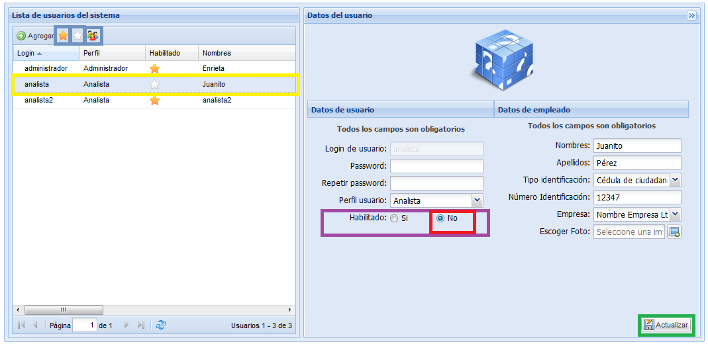

Agregar empleado
Para agregar un empleado pulse el botón Agregar, diligencie los formulario que están en el lado derecho llenando la siguiente información y pulse el botón Guardar.
Datos del usuario
- Login de usuario : Ingrese el login de usuario (es un campo obligatorio).
- Password : Ingrese el pasword debe ser mínimo de 8 dígitos (es un campo obligatorio).
- Repetir password : Repita el password (es un campo obligatorio).
- Perfil : Seleccione un perfil de usuarios, los perfiles definen que puede hacer cada persona, (es un campo obligatorio)
- Administrador: Administrador del sistema, dentro
de las tareas principales que puede desempeñar este perfil están manejo
de métodos, manejo de equipos , manejo de usuarios y empleados, otra
característica importante de este usuario es la posibilidad de ver
reportes que permitirán la toma de decisiones importantes para la
empresa cliente.
- Analista: Es el perfil de los empleados que pueden ingresar tiempos de corrida de sus análisis.
- Coordinador o supervisor: Es un perfil para usuarios que requieran ingresar a los reportes de toma de decisiones.
- Habilitado
: Seleccione si el usuario está habilitado o deshabilitado, tenga
en cuenta que los usuarios deshabilitados no podrán ingresar al sistema (es un campo obligatorio).
Nota: El login y el password deben ser entregados a los usuarios para que estos ingresen al sistema.
Datos del empleado
- Nombre : Ingrese el nombre del empleado (es un campo obligatorio).
- Apellidos : Ingrese los apellidos del empleado (es un campo obligatorio).
- Tipo identificación : Seleccione el tipo de identificación del empleado (es un campo obligatorio).
- Número identificación : Ingrese el número de identificación (es un campo obligatorio).
- Empresa : Seleccione la empresa a la cual pertenece el empleado.
- Escoger Foto : Utilícelo para subir el sistema una foto del usuario (es opcional)
Nota: Para agregar un empleado previamente debe haber creado el usuario.
Actualizar
Para actualizar un empleado, seleccione el empleado que desea actualizar de la lista,
actualice la información en el formulario
del lado derecho y pulse el botón Actualizar.
El sistema desplegara una pequeña ventana donde le preguntará porque
razón desea actualizar el empleado, digite la razón y pulse el botón aceptar. Luego el sistema le mostrará un breve mensaje en el que informa del éxito del cambio.
Deshabilitar
Para deshabilitar un empleado, seleccione un empleado de la lista y en el formulario del lado derecho seleccione en el campo habilitado la opción No, y pulse el botón actualizar, el sistema desplegara una pequeña ventana donde le preguntara porque
razón desea actualizarlo, digite la razón y pulse el botón
aceptar. Luego el sistema le mostrara un breve mensaje en el que informa
del éxito de la actualización, recuerde que los usuarios deshabilitados no podrán ingresar al sistema.
En la figura 2 se muestra el listado de todos los usuarios del sistema,
tanto los habilitados como los deshabilitados, los habilitados están
acompañados dentro de la lista por una estrella amarilla, mientras que los deshabilitado estan acompañados
por una estrella blanca, usted puede útilizar los botones de la barra
superior para ver solo los habilitados, solo los deshabilitados , o
todos los usuarios.

Figura 2.Listado de todos los usuarios.